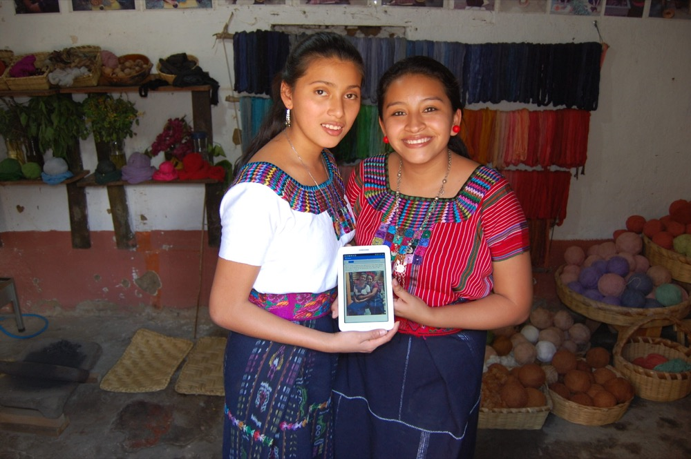
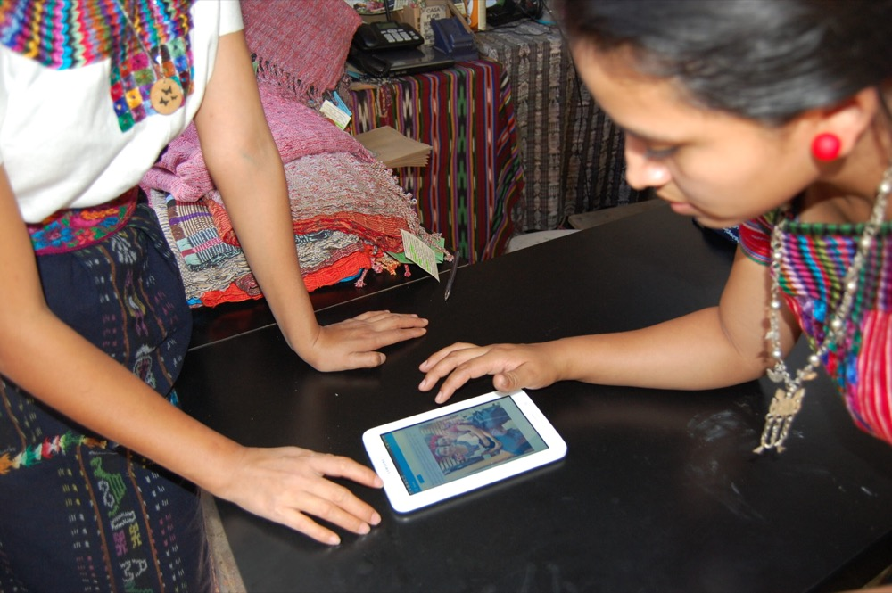

Casa Flor Ixcaco is a small enterprise of 20 indigenous female artisans in Guatemala. We spoke with Alana Marsili, who worked with the cooperative to build a CommCare app that brought point-of-sale data analytics into their day-to-day business operations.

Alana’s graduate work at Georgetown posited that mobile applications could strengthen the relationships between small and medium domestic enterprises and formal institutions in Latin America, effectively creating a new middle class and tax base for the region. She found Dimagi’s CommCare platform offered a chance to pilot that theory with a small enterprise in Guatemala.
Identifying the need
How did you determine there was a technical need for Casa Flor Ixcaco?
Casa Flor Ixcaco, like many small enterprises, lacked access to a tool that could provide smart data analytics to transform business operations and enable a more sustainable approach to sales. It takes the women anywhere from one to four weeks to weave a product, which is sold in a market located three hours, a 30-minute boat ride, and a hike up the mountainside from Guatemala City. The market is isolated, but tourism and social media have opened unlikely inroads. Through the analytics we receive from CommCare, alongside website, Facebook, and Instagram analytics, we are positioning Casa Flor Ixcaco to maximize earnings from foot traffic and to create a virtual network of support and curated market opportunities based on data.
Building and rolling out the app
What kind of app did you build for them?
I built a case management application that uses a form to ask five key questions to clients at the point of sale.
Who uses the app?
The application is built to be used by the client while a Casa Flor Ixcaco representative rings up the sale. Because their sales often come with busy tour groups on tight timelines, the goal is to capture 50% of sales data in a given week, and to enter the rest during down time.
Did you find app building to be a challenge? How about training the end users?
The application build was very easy. CommCare’s platform is user friendly, and I found it easy to navigate the search functionality whenever I came across a challenge. Training was even easier. I explained the application to one of the employees, who was able to teach another employee on her own the next day.
The goal, and advice for others
What is the goal?
The goal is to streamline production, style, and the type of items in the store through a greater understanding of Casa Flor Ixcaco’s consumer profile. We hope this information will let them work in additional market spaces with a clearer proposal to distributors, and help the women move from sustainability to profitability as more active players in their industry.
Any advice for similar organizations looking to incorporate a data collection tool?
We started by asking ourselves whether small changes could make a big difference, and then thought about how strengthening analytics at the point of sale could do that. Data is only helpful insofar as it is designed with an end goal in mind. We knew we had an end goal and we knew we needed data to make evidence-based decisions. I think this style of thinking can apply to any organization interested in exploring data collection.

You can follow the story and support the women by visiting woven-gt.com.
See what CommCare can do for your program
Talk with our team about digitizing service delivery and monitoring for your frontline workforce.
Get in touch